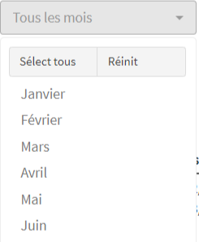
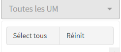
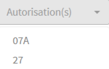
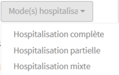

Filtres des écrans MCO
Liste des filtres présents dans les écrans MCO
Introduction
Présentation des filtres communs à la plupart des écrans MCO.
Chaque filtre est décrit par :
- son type
- ses valeurs
- son fonctionnement par rapport aux principaux items (RUM, séjours, actes CCAM, codage CIM, DMI, UCD, patient, entrée ACE, factures) sélectionnés dans les écrans MCO (tableaux, graphiques, exports csv, JSON ou .rds)
- autres informations
Pour des raisons d’affichage, certains filtres sont accessibles via un méta-filtre.
Exemple : tous les filtres de classification des séjours (filtre “CMD”, filtre “sous_CMD”, filtre “GHM”, …) sont accessibles via le méta-filtre “Classification séjour”
Les filtres MCO ou les usages d’un filtre MCO spécifiques à un écran sont décrits dans la documentation de l’écran concerné.
Filtre “Année”
Type de filtre : liste.
Valeurs : 2019 à 2023
Fonctionnement :
Avec les RUM = sélection des RUM avec la date de sortie du RUM dans l’année sélectionnée
Avec les séjours = sélection des séjours dont la date de sortie (= la date de sortie du dernier RUM du séjour) dans l’année sélectionnée
Avec les actes CCAM = sélection des actes CCAM des RUM avec la date de sortie du RUM dans l’année sélectionnée
Avec les codages CIM = sélection des codages CIM des RUM avec la date de sortie du RUM dans l’année sélectionnée
Avec les DMI = sélection des DMI du FICHCOMP DMI avec l’année d’import correspondant à l’année sélectionnée
Avec les UCD = sélection des UCD du FICHCOMP LES et du FICHCOMP MED AP-AC avec l’année d’import correspondant à l’année sélectionnée
Avec les ACE = sélection des ACE du RSAF-ACE avec l’année d’import correspondant à l’année sélectionnée
Autres informations :
Filtre présent dans tous les écrans en 1ere position de la 1ere ligne de filtres.
Filtre disponible en accès Standard.
Filtre “Mois”

Type de filtre : liste.
Valeurs : les 12 mois
Fonctionnement :
Avec les RUM = sélection des RUM avec la date de sortie du RUM dans le ou les mois sélectionné(s)
Avec les séjours = sélection des séjours dont la date de sortie (= la date de sortie du dernier RUM du séjour) dans le ou les mois sélectionné(s)
Avec les actes CCAM = sélection des actes CCAM des RUM avec la date de sortie du RUM dans le ou les mois sélectionné(s)
Avec les codages CIM = sélection des codages CIM des RUM avec la date de sortie du RUM dans le ou les mois sélectionné(s)
Avec les DMI = sélection des DMI des séjours dont la date de sortie (= la date de sortie du dernier RUM du séjour) dans le ou les mois sélectionné(s)
Avec les UCD = sélection des UCD des séjours dont la date de sortie (= la date de sortie du dernier RUM du séjour) dans le ou les mois sélectionné(s)
Avec les ACE = sélection des ACE dont la date du type ACE (A,B,C,L,M,H,P) dans le ou les mois sélectionné(s)
Autres informations :
Filtre présent dans tous les écrans en 2eme position de la 1ere ligne de filtres.
Filtre disponible en accès Standard
Filtre “UM”

Type de filtre : liste.
Valeurs : codes des UM représentées par au moins 1 RUM dans les imports PMSI de l’établissement.
Autres informations :
Filtre présent dans tous les écrans en 3eme position de la 1ere ligne de filtres.
Filtre disponible en accès Standard
Filtre “Autorisation”

Type de filtre : liste.
Valeurs : codes des autorisations représentées au moins 1 fois dans les fichiers FICIUM de l’établissement.
Autres informations :
Filtre affiché dans le méta-filtre “Type d’UM”
Filtre actif si au moins un FICIUM a été importé
Filtre disponible en accès Standard
Filtre “Mode d’hospitalisation”

Type de filtre : liste.
Valeurs : les modes d’hospitalisation possibles en MCO.
Autres informations :
Filtre affiché dans le méta-filtre “Type d’UM”
Filtre actif si au moins un FICIUM a été importé
Filtre disponible en accès Standard
Filtre “NAS”
Type de filtre : code.
Valeurs : saisie libre d’une suite alphanumérique
Autres informations :
Filtre disponible uniquement en accès Professionnel
Filtre “CMD”
Type de filtre : liste.
Valeurs : codes + libellés CMD des CMD représentées par au moins 1 RUM dans les imports PMSI de l’établissement.
Autres informations :
Filtre affiché en 1ere position du méta-filtre “Classification séjour”
Filtre disponible en accès Standard
Filtre “Sous_CMD”
Type de filtre : liste.
Valeurs : codes + libellés des sous-CMD représentées par au moins 1 RUM dans les imports PMSI de l’établissement
Autres informations :
Filtre affiché en 2ème position du méta-filtre “Classification séjour”
Filtre disponible en accès Professionnel
Filtre “CMKZ”

Type de filtre : liste.
Valeurs : C, M, K, Z
Autres informations :
Filtre affiché en 3ème position du méta-filtre “Classification séjour”
Filtre disponible en accès Professionnel
Filtre “GHM”
Type de filtre : liste.
Valeurs : codes + libellés des GHM des GHM représentés par au moins 1 RUM dans les imports PMSI de l’établissement
Autres informations :
Filtre affiché dans le méta-filtre “Classification séjour”
Filtre disponible en accès Professionnel
Filtre “Sévérité-Durée”
Type de filtre : liste.
Valeurs : 1, 2, 3, 4, J, T, Z, E, A, B, C, D
Autres informations :
Filtre affiché dans le méta-filtre “Classification séjour”
Filtre disponible en accès Professionnel
Filtre “Nombre RUM par séjour”
Type de filtre : intervalle.
Valeurs : saisie numérique
Autres informations :
Filtre affiché dans le méta-filtre “Type de RUM”
Filtre disponible en accès Professionnel